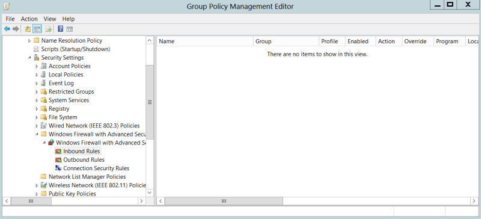

in & out connections
IPv6 poisoning abuses the fact that Windows queries for an IPv6 address even in IPv4 only environments. Because of disabling IPv6 entirely may have unwanted side effects;
The safest way to prevent Man-in-the-Middle Attacks(with mitm6 for example) is to block in Windows Firewall via Group Policy.:
◇ DHCPv6 traffic (Incoming and Outgoing)
▪ Inbound Rules → Core Networking - Dynamic Host Configuration Protocol for IPv6(DHCPV6-In)
▪ Outbound Rules → Core Networking - Dynamic Host Configuration Protocol for IPv6(DHCPV6-Out)
◇ Incoming router advertisements
▪ Inbound Rules → Core Networking - Router Advertisement (ICMPv6-In)
How to Configure Windows Firewall Rules using Group Policy
There are two ways to configure Windows Firewall rules using Group Policy:
• Using the legacy configuration
The settings can be found under Computer Configuration > Administrative Templates > Network > Network Connections > Windows Firewall. The settings in this section was intended for Windows Version before the release of Windows Vista and Windows Server 2008 but still work for newer release of Windows. However, it is not recommended to be used unless we’re still managing outdated OS in the domain.
• Using the new configuration
The settings can be found under Computer Configuration > Windows Settings > Security Settings > Windows Firewall with Advanced Security. The settings in this section has been optimized for current Windows release, and it has the very same wizard GUI when creating the firewall rule directly on the client computer, making it easier for administrator.
Bibliography:
Practical Ethical Hacking, Heath Adams(Cyber Mentor)